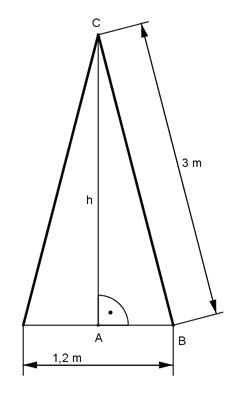

Pythagoras Aufgabe 33 Eine Klappleiter hat eine Länge von 3 m. Sie steht am Boden 1,2 m auseinander. Welche maximale Höhe h in m ist möglich?  In einem gleichschenkligen Dreieck halbiert die Höhe die Grundseite. AB = 1,2 m/2 = 0,6 m Satz von Pythagoras im Dreieck ABC: BC² = AB² + h² |-AB² h² = BC² - AB² h² = 3² m² - 0,6² m² = 8,6 m² |√ h = 2,9 m